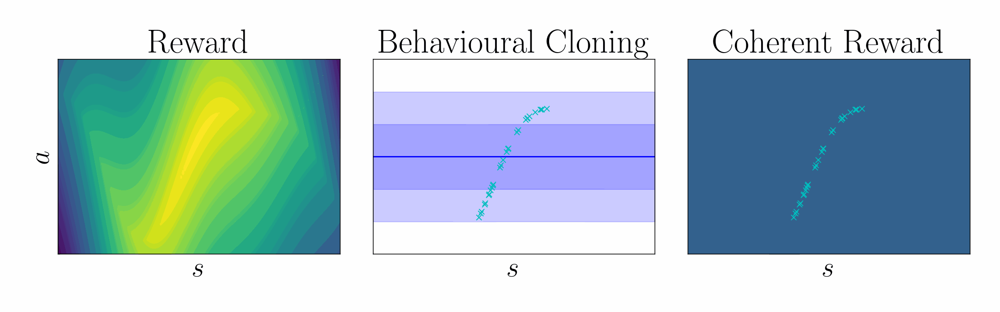

Coherency in entropy-regularized reinforcement learning
Ng et al. 1999 showed that a potential function \(\Psi\) can shape a reward function without changing the optimal policy, $$ \underbrace{r(\mathbf{s},\mathbf{a})}_{\text{True reward}} = \underbrace{\tilde{r}(\mathbf{s},\mathbf{a})}_{\text{Shaped reward}} + \underbrace{\Psi(\mathbf{s}) - \gamma\,\mathbb{E}_{\mathbf{s}'\sim \mathcal{P}(\cdot\mid\mathbf{s},\mathbf{a})}[\Psi(\mathbf{s}')]}_{\text{Potential function shaping}}. $$ $$ \underbrace{\mathcal{Q}(\mathbf{s},\mathbf{a})}_{\text{True critic}} = \underbrace{\tilde{\mathcal{Q}}(\mathbf{s},\mathbf{a})}_{\text{Shaped critic}} + \underbrace{\Psi(\mathbf{s})}_{\text{Potential}}. $$ In entropy-regularized RL, the optimal policy take the form of a pseudo-posterior, $$ \underbrace{q_\alpha(\mathbf{a}\mid\mathbf{s})}_{\text{Cloned policy}} = \underbrace{\exp\left(\frac{1}{\alpha}\,(\mathcal{Q}(\mathbf{s},\mathbf{a}) - \mathcal{V}_\alpha(\mathbf{s}))\right)}_{\text{Unknown advantage function}}\, \underbrace{p(\mathbf{a}\mid\mathbf{s})}_{\text{Policy prior}}. $$ Rearranging terms, we can express the critic in terms of the log policy ratio and soft value function $$ \underbrace{\mathcal{Q}(\mathbf{s},\mathbf{a})}_{\text{Unknown critic}} = \underbrace{\alpha\log\frac{q_\alpha(\mathbf{a}\mid\mathbf{s})}{p(\mathbf{a}\mid\mathbf{s})}}_{\text{Log policy ratio}} + \underbrace{\mathcal{V}_\alpha(\mathbf{s})}_{\text{Soft value function}}. $$ Comparing this result with that of Ng et al., we show that the log policy ratio is a shaped reward function, $$ \text{Shaping theory:} \quad \underbrace{r(\mathbf{s},\mathbf{a})}_{\text{True reward}} = \underbrace{\tilde{r}(\mathbf{s},\mathbf{a})}_{\text{Shaped reward}} + \underbrace{\Psi(\mathbf{s}) - \gamma\,\mathbb{E}_{\mathbf{s}'\sim \mathcal{P}(\cdot\mid\mathbf{s},\mathbf{a})}[\Psi(\mathbf{s}')]}_{\text{Potential function shaping}}. $$ $$ \text{Coherent reward:} \quad \underbrace{r(\mathbf{s},\mathbf{a})}_{\text{True reward}} = \underbrace{\alpha\log \frac{q_\alpha(\mathbf{a}\mid\mathbf{s})}{p(\mathbf{a}\mid\mathbf{s})}}_{\text{Coherent reward}} + \underbrace{\mathcal{V}_\alpha(\mathbf{s}) - \gamma\, \mathbb{E}_{\mathbf{s}'\sim \mathcal{P}(\cdot\mid\mathbf{s},\mathbf{a})}\left[\mathcal{V}_\alpha(\mathbf{s}')\right]}_{\text{Soft value function shaping}}. $$ To leverage coherency, behavioral cloning amounts to KL-regularized heteroscedastic regression, $$ \textstyle\max_\mathbf{\theta} \mathbb{E}_{\mathbf{a},\mathbf{s}\sim \mathcal{D}}[\log q_\mathbf{\theta}(\mathbf{a}\mid\mathbf{s})] {\,-\,} \lambda\, \mathbb{D}_{\text{KL}}[q_\mathbf{\theta}(\mathbf{w})\mid\mid p(\mathbf{w})], $$ $$ \text{ where } q_\mathbf{\theta}(\mathbf{a}\mid\mathbf{s}) = \int p(\mathbf{a}\mid\mathbf{s},\mathbf{w}) \, q_\mathbf{\theta}(\mathbf{w}) \,\mathrm{d}\mathbf{w}, \quad p(\mathbf{a}\mid\mathbf{s}) = \int p(\mathbf{a}\mid\mathbf{s},\mathbf{w}) \, p(\mathbf{w}) \,\mathrm{d}\mathbf{w}. $$
| Using this regularized regression objective, the cloned policy can be used to define the shaped reward using the log policy ratio, in contrast to prior work which learn the reward using classification. |  |